September 2017
| The early part of the month was dominated by
the wildfires and heavy smoke in the area. It was very bad for about
two weeks, then thankfully we finally got some rain and even a bit of snow
to cool the fires off a bit and smother the smoke. |
|
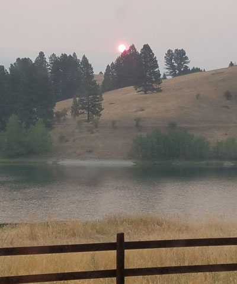 |
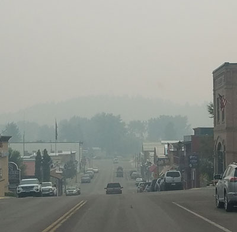 |
| You could look directly at the sun on some smoky days. | Our cute little town was hard to see through the smoky haze. |
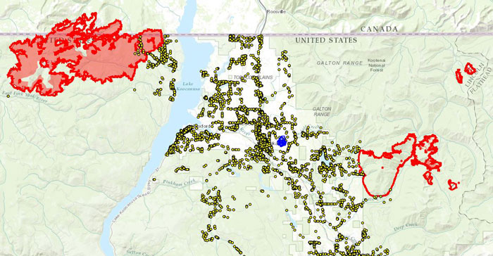 |
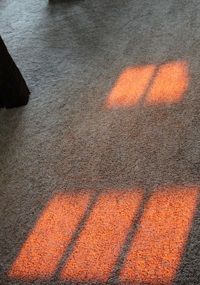 |
| A map of the two fires (in red) that were burning on each side of
Eureka. The big fire was about 20 miles from our house and the small fire about 8 miles away. |
The smoke sometimes turned the mid-day sunlight into a reddish color. |
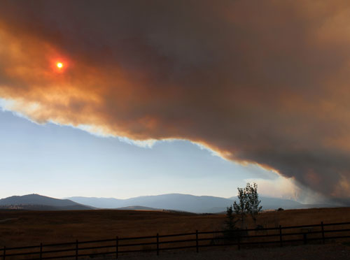 |
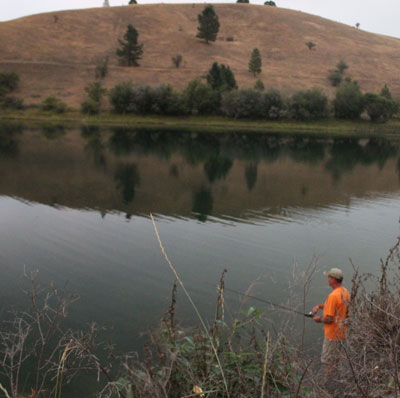 |
| A wall of smoke coming from the fire on the West Kootenai | Our friend Jamie Stark fishing with Eric one fine evening |
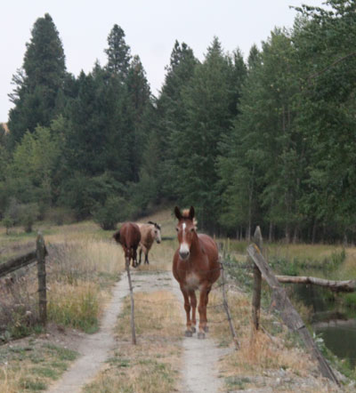 |
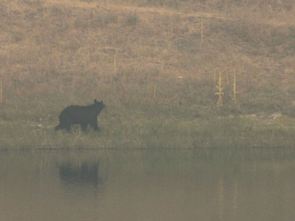 |
| Our good friends and neighbors, this mule and his two horse buddies share our land and welcome all the apples we care to bring to them. |
I had two bear sightings from my dining room in September, but the smoke
made it hard to get good pictures. |
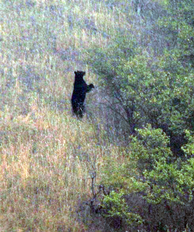 |
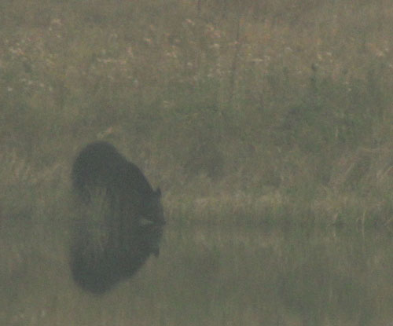 |
| Eating berries off the trees | After getting a drink in the lake, he got in and swam around in little circles for a while. |
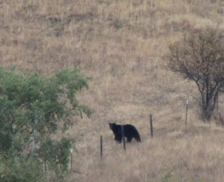 |
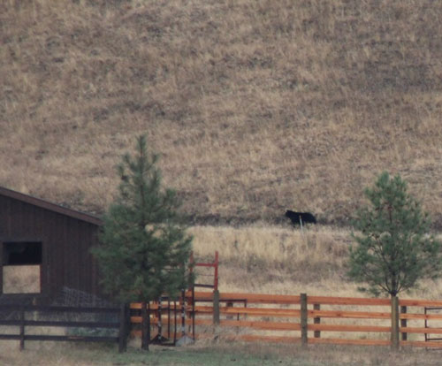 |
| The day of the second sighting had less smoke. This is him just after
crossing under the fence into Dan & Tracie's property. |
Dan & Tracie's shed in the foreground with the bear walking on the road
that leads to Jeb & Amy's cabin. Dan's horses were all around, I was surprised they didn't run away. |
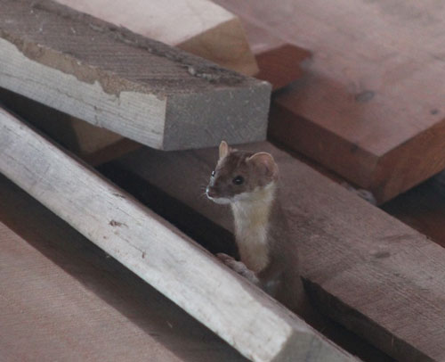 |
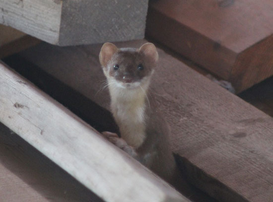 |
| This adorable weasel is one of my favorite things about our Montana
house. He lives in our barn and will come out if you sit still in there long enough. He is very curious. |
Once he touched the toe of my shoe, he got so close. I just love this little guy! |
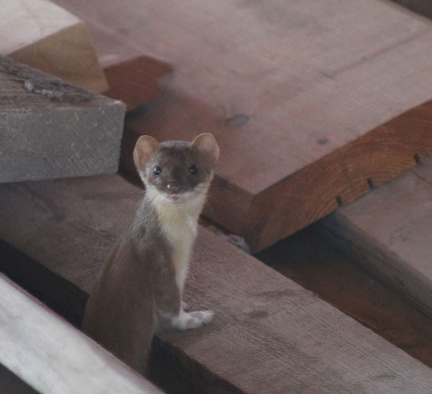 |
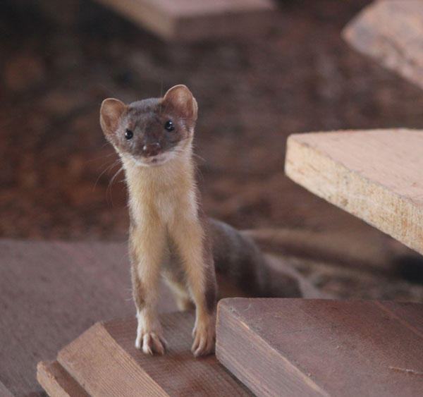 |
| He darts around extremely fast, he's a wild man. | This is the best picture I have of him. I'm in love! |
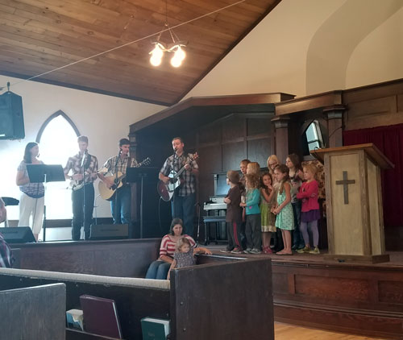 |
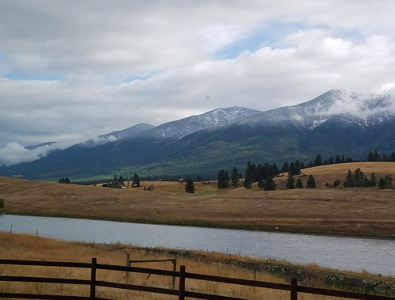 |
| Some wonderful old-time singing at our church, with the kids involved. Awesome! | Snow in mid-September, woo hoo! It was so nice to dampen the fires and the smoke. |
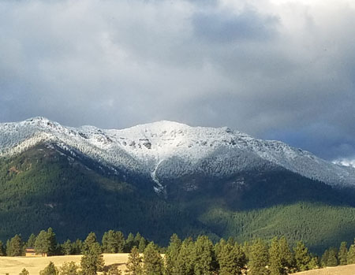 |
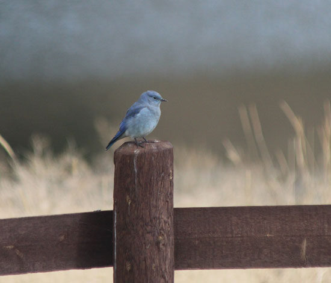 |
| On certain days, we get a flock of blue birds in the yard. Sometimes
you'll see 5 or 6 of these guys, each sitting on their own fence post. |
|